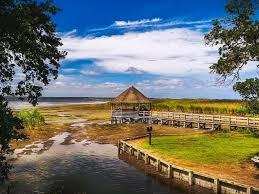

Outer Banks

Quero ir à Outer Banks para fugir da rotina e encontrar paz à beira-mar. As praias tranquilas, os faróis históricos e o charme simples do lugar me atraem. Quero caminhar na areia, sentir a brisa do oceano e relaxar de verdade. Busco um refúgio calmo, bonito e cheio de natureza. É o tipo de viagem que recarrega a alma.
- Cape Hatteras National Seashore
- Jockey's Ridge State Park
- Cape Hatteras Lighthouse
- Wright Brothers National Memorial
- Roanoke Island & Elizabethan Gardens
Itens que pretendo levar na mala:
- Roupas leves e de praia
- Protetor solar e repelente
- Óculos de sol e chapéu
- Tênis ou sandálias confortáveis
- Câmera ou clelular com boa câmera
Saiba mais sobre o turismo em Outer Banks:
www.Outerbanks
Clique aqui para mais informações